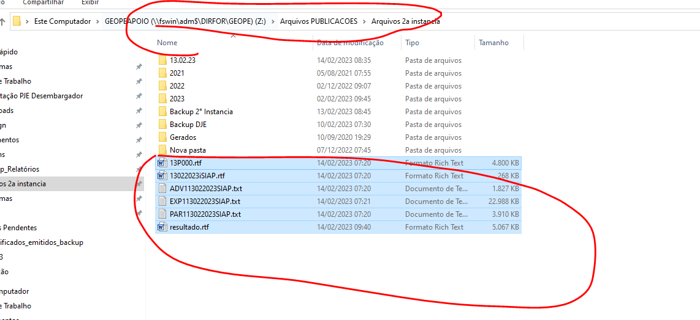
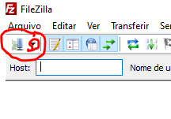
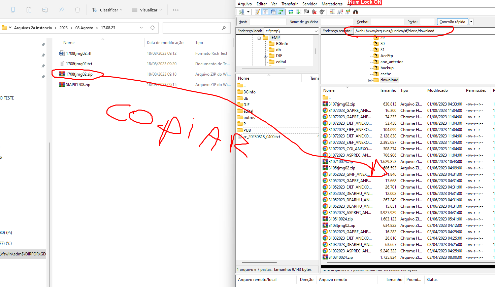

Manual DJE Segunda Instância
Geração dos Arquivos Iniciais
- Clique no ícone (nova versão sifipub01) e faça o login.
- Informe seu usuário P, senha e no campo "Banco de Dados" cole SUNBDPROD-RAC.
- Na tela de geração, clique em Executa Processamento para criar os arquivos TXT e RTF.
- Após clicar em executa processamento aparecerá a tela abaixo:
- Pode fechar a janela acima clicando em Ok.
Montagem do Arquivo RTF
- Acesse a pasta
C:\Sis\siap\arquivos\digital. - Execute o DJE-MONTA ARQUIVO. Isso gerará o arquivo
RESULTADO.RTF. - Recorte todos os arquivos (exceto "dje monta arquivos") e cole na pasta:
Z:\Arquivos PUBLICACOES\Arquivos 2a instancia

Backup e Transferência dos Arquivos DJE
- Dentro da pasta
Z:\Arquivos PUBLICACOES\Arquivos 2a instancia\backupdje, crie uma nova pasta com a data do expediente. - Recorte os dois arquivos DJE gerados e cole-os nesta nova pasta de backup.
- Abra o FileZilla, conecte-se ao SUNCOP-2 e navegue até a pasta
DJEELETRONICO. - Copie os dois arquivos DJE para esta pasta no servidor.
- Na pasta
Z:\Arquivos PUBLICACOES\Arquivos 2a instancia, compacte os arquivosadv,expeparem um único ZIP. Renomeie para SIAPIIDIAMES (com a data do expediente). - Renomeie o arquivo
RESULTADO.RTFparaDIAMEStjmg02.rtfe depois compacte-o. - Crie uma pasta para o dia do expediente (ex:
13.02.23) dentro deZ:\Arquivos PUBLICACOES\Arquivos 2a instancia\2023\[Mês]. - Mova os arquivos ZIP criados e o
DIAMEStjmg02.rtfpara esta pasta. - Copie o arquivo
DIAMEStjmg02.txtda pasta do dia anterior para a pasta atual. - Abra o
.txte atualize a data e o tamanho do arquivo para que correspondam ao novoDIAMEStjmg02.zip. - Renomear o arquivo acima para o dia do expediente.
Dica: Antes de compactar o arquivo RTF, abra-o para verificar se ocorrerá algum erro. Caso haja erro ao abrir, basta clicar com o botão direito, selecionar 'Abrir com' e escolher WordPad. Após abrir, pressione Enter e depois Backspace. Feche o arquivo e salve as alterações
Publicação no Site e Envio para OAB
- No FileZilla, conecte-se ao site tj ARQUIVOS RTF. 
- Acesse a pasta
/downloade envie oDIAMEStjmg02.zip.

- Volte um diretório, acesse a pasta do dia do expediente e apague seu conteúdo (exceto se houver um arquivo
DIAMESTJMG01.TXTdo dia). - Envie o seu
DIAMEStjmg02.txtatualizado para esta pasta. - RECORTAR OS ARQUIVOS ABAIXO DA PASTA Z:\Arquivos PUBLICAÇÕES\Arquivos 2ª Instância
- E COLAR NA PASTA Z:\Arquivos PUBLICACOES\Arquivos 2a instancia\Backup 2° Instancia\2023\02.Fevereiro
- Confira no site do TJMG se a publicação foi disponibilizada.
- Envie os arquivos
DIAMESTJMG02.ZIPeSIAPIIDIAMES.ZIPpara a OAB por e-mail.
Rodar a Segunda Instância
- Acessar conexão remota:
- ABRIR O ATALHO GERADJE
- Selecione Segunda Instância e clique em OK.
- USUÁRIO: tjadm.
- SENHA: smdadje
Dica: CONFERIR NA PASTA DJEELETRONICO NO SUNCOP-2 SE TEM OS 2 ARQUIVOS DO DJE.